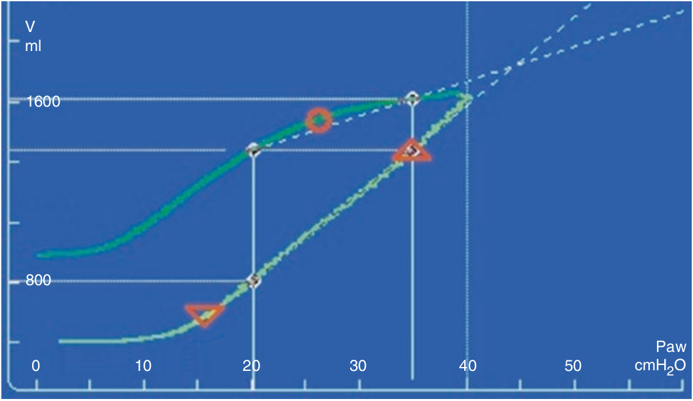

اگر باری بر روی جدار سینه باشد، قسمت نخست شاخه صعودی ممکن است بصورت افقی در آید، یعنی با افزایش فشار هیچ افزایشی در حجم نشان ندهد. افزایش حجم در آن فشاری شروع می شود که از فشار وارد بر جدا سینه بیشتر باشد. این موضوع در مواردی مانند افزایش فشار داخل شکمی، چاقی مفرط، و ادم ممکن است روی دهد.

در رابطه با فشار سنگین وارد به جدار سینه کدام مورد زیر غلط است؟
۱ - ریه ها معمولا استعداد بازگشائی دارند
۲ - اولین قسمت از شاخه صعودی لوپ معمولا افقی و بدون افزایش حجم است
۳ - تغییری در شیب انبساط ریه روی نمی دهد
۴ - برای بازگشائی ریه فشار بالاتری لازم است
۵ - برای باز نگه داشتن ریه PEEP بالاتری لازم است